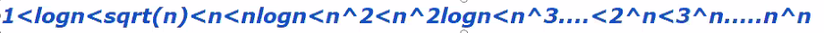
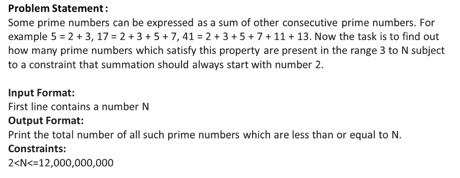
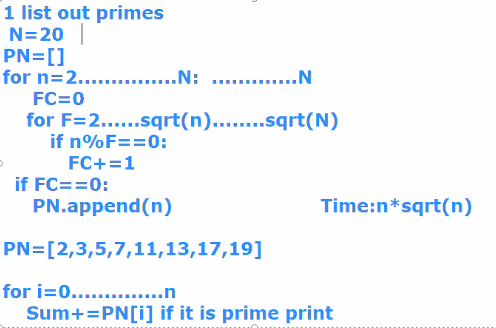
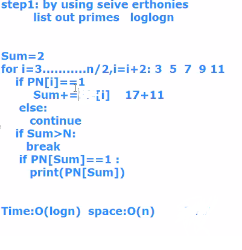
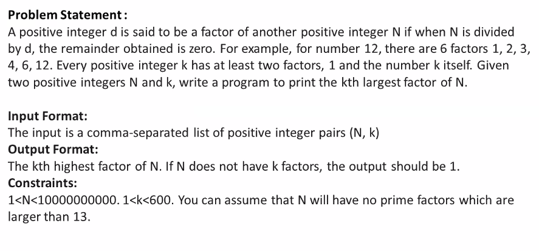
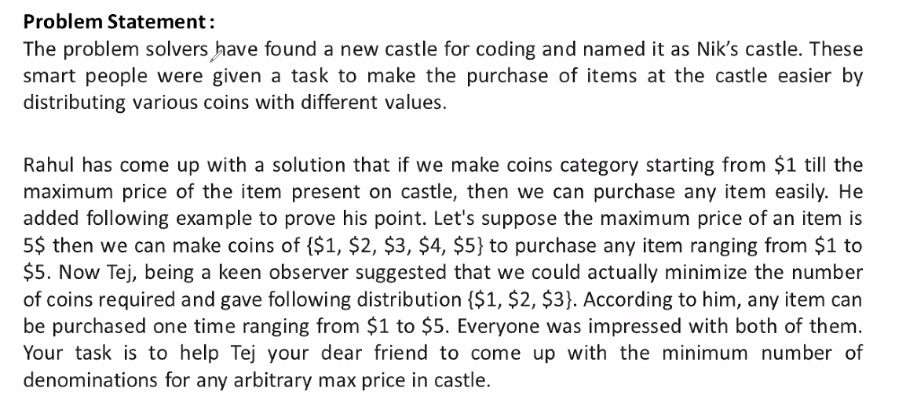
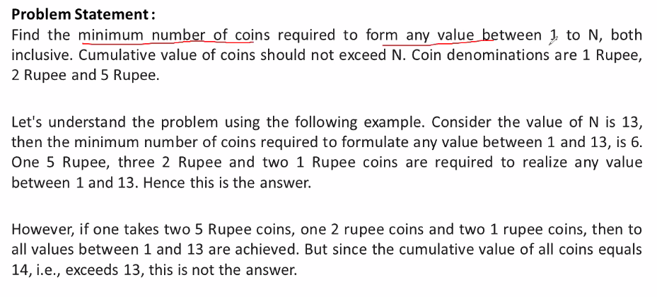
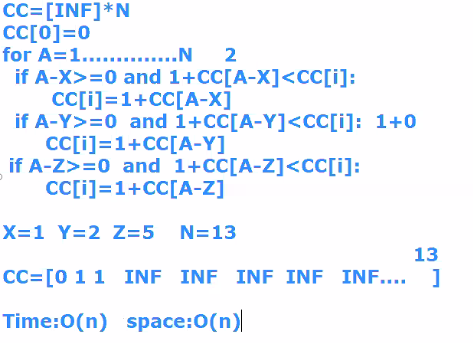

In recursion functions, for every time a recursion function is called a runtime stack is allocated
Time Complexitys:

any algorithm will fall in between two of the time intervals
-----------------------------------------------------------------------------------------------------------------------------------------------------------------------------------------------------------------------------------------------------
1)

for a given number n if there exists no root between 2-sqrt(n), thenthe number is prime number.
This algorithm wont work because time is n*sqrt(n) so we need to go for Sieve Eratosthenesprinciple:-->

-----------------------------------------------------------------------------------------------------------------------------------------------------------------------------------------------------------------------------------------------------
2)


-----------------------------------------------------------------------------------------------------------------------------------------------------------------------------------------------------------------------------------------------------
3)

Ans): add the natural numbers until the sum exceeds the max value, and with every sum increase the count, now at last print the count(min number of coins)
-----------------------------------------------------------------------------------------------------------------------------------------------------------------------------------------------------------------------------------------------------
4)

A)

Another approach